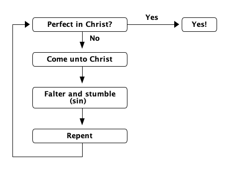

CSE 180
Welcome! You are about to embark on a learning adventure that will affect your life in a surprising number of good ways. Learning to think algorithmically means taking a measured and measurable look at how you spend your time, and thus your life. While you may not be looking at a future as a computer professional, you will almost certainly use computers every day of your life. This course is designed for everyone, the computer career aspiring to the non-computer-focused career aspiring, from accountants or beauticians to chefs or zoologists, and everyone in between. In this course you will learn a little math, and a little computer science, but only such as is well within your grasp, whatever your background.
Are you ready for the ride? Then strap on your seat belt, and let’s begin! Take notes on your impressions regarding what you are about to read. You will need these notes when you meet with your team on Friday of this week.
A giant of computer science, Donald E. Knuth, once said that algorithmic thinkers are flexible, adaptable thinkers. Well, what he actually said was:
Such people are especially good at dealing with situations where different rules apply in different cases; they are individuals who can rapidly change levels of abstraction, simultaneously seeing things “in the large” and “in the small.”
Let’s apply this thought to the gospel, and in the process see why algorithmic thinking is firstly intentional, secondly providential, and thirdly logical.
We think simultaneously in the large and in the small when we keep an eternal perspective even as we mind the daily details of life. And life must be lived day by day. The Savior said “sufficient unto the day is the evil thereof” which translates to modern vernacular as “take life one day at a time”. (Need a better translation?!)
But are not planning and preparation essential to successful daily living? Indeed! If we’re smart we plan our meals to meet our daily nutritional needs and pleasure wants (ideally, we find eating pleasurable — otherwise we would be satisfied being fed intravenously with the exact right balance of nutrients our bodies need!)
First, algorithmic thinking is intentional thinking.
It is purposeful, goal-driven. Think about the inspired new Youth (and Everyone) Program that urges us to Discover, Plan, Act, and Reflect in the Spiritual, Social, Intellectual and Physical areas of our lives.
(An aside: Such thinking does not appeal to “free spirits” for whom life is a lark — who “just go with the flow” — who value spontaneity over planning and see their life as a playground of fun-seeking diversion — until reality sets in.)
Second, algorithmic thinking is providential thinking.
Alma 12:24 says this life is a time to prepare to meet God. God says organize yourselves, prepare every needful thing.
Before going further, let’s pause to answer the burning question — “What is an algorithm, exactly?”
In answering this question the recipe analogy is often used, and it’s a good one, as both are step-by-step problem-solving or solution-seeking procedures that take inputs (ingredients for recipes) and produce outputs (delicious dishes, yes?). The “List of Ingredients” is typically the first component of a recipe, with “Directions” second. So we might say that recipes feature an implicit “Step 0” that could be made explicit as: “Acquire all required ingredients in the proper quantities.” Steps 1, 2, 3, … are all spelled out (we hope unambiguously) to guide the determined cook to the desired end.
But recipes for cooking are not the only kind. For another, far more weighty example, see
https://www.lds.org/general-conference/2008/04/the-gospel-of-jesus-christ?lang=eng
It’s interesting that Elder Perry ties the gospel recipe back to the cooking kind!
“It is important to begin with the end in mind…”
Back to thinking in the large and in the small, here’s Moroni’s algorithm for a successful life — becoming “perfect in Christ”:
Yea, come unto Christ, and be perfected in him, and deny yourselves of all ungodliness; and if ye shall deny yourselves of all ungodliness, and love God with all your might, mind and strength, then is his grace sufficient for you, that by his grace ye may be perfect in Christ … (Moroni 10:32, emphasis added.)
Perhaps Moroni would smile if we took liberties and interpreted his algorithm thus:
Iterate (repeat) these three steps
Until perfected in Christ:

(This actually follows an algorithm design technique named Iterative Improvement — as the hymn says, “Improvement and progression have one eternal round.” Perhaps round means cyclical. Cycles feature small and big in our time-driven lives: minutes, hours, days, weeks, months, years, …, eternities.)
Note that Moroni uses conditional language, a logical if-then proposition. Which brings us to the third characteristic of algorithmic thinking:
Third, algorithmic thinking is logical thinking.
Consider this: Alma 11:40 affirms that “salvation cometh to none else” than those “that shall have eternal life” — logically speaking, do those two terms mean the same thing? (You might connect this verse to Moses 1:39, and Doctrine and Covenants 6:13 and 14:7, and ask where immortality fits in with salvation and eternal life. Refer back to Elder Perry on this too.)
A rather more mundane kind of logical algorithmic thinking has many applications in everyday life.
Every time you get dressed in the morning you are thinking logically and algorithmically when you decide to put your socks on before your shoes. This may seem automatic, and a no-brainer, but consider that there are many different ways (orderings) of putting on your clothes that work. There’s not just one fixed way to do it. So which way is best? Does it matter?
In general, when you have a task to perform, what is the shortest path to completion of that task? Can you prove it is the shortest of all the possible paths? How to best answer this and other types of questions about algorithms are explored throughout this course. It’s going to be a blast!
Jeanette Wing is an amazing role model for you. Read two of the articles she wrote about algorithmic thinking (remember to take notes for discussion with your team). The first article introduces algorithmic thinking as computational thinking and claims “it represents a universally applicable attitude and skill set everyone, not just computer scientists, would be eager to learn and use.”
The second is her realizations after thinking about algorithmic thinking for an additional ten years. Read it, see what you think, and take notes on this one too for your team discussion.